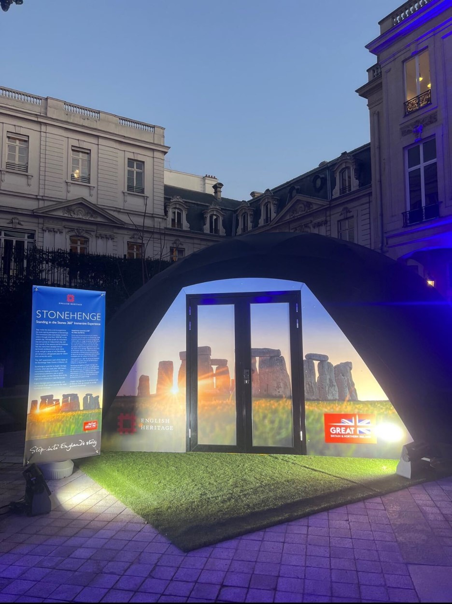

In April 2022, UNESCO placed Stonehenge's World Heritage Status at risk due to the impact of a proposed road-tunnel within it's boundaries. The designation is thought to be worth £150 million per annum to GDP.
I was to lead development of a Digital Twin of the Stonehenge World Heritage Site (WHS) so ambassadors to UNESCO could evaluate the WHS before and after completion of the tunnel project.
This would be the first time a Significant Infrastructure proposal would be represented as a Digital Twin in the UK. In total the 36 2 km environment would ingest a terabyte of planning data.
My task was to ensure our product was valuable to our client and viable given the constraints of our business. I was expected to contribute a deep knowledge of our customer and data about how users engage with the product. Moving forwards, I was expected to track industry trends and the competitive landscape and adapt our product strategy, accordingly.
This work is further documented by Moore (2022) in: International Conference on Cultural Heritage and New Technologies, Vienna.

Figure 1: CAVE Projection - British Embassy, Paris